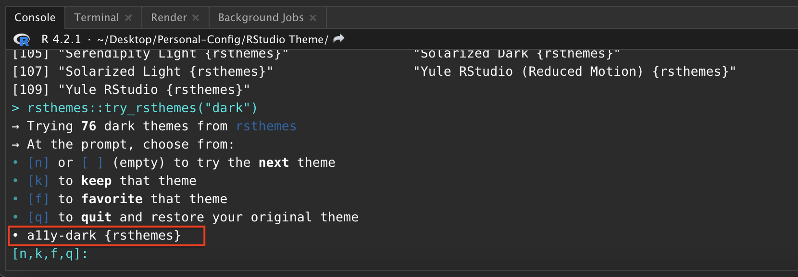

52 RStudio Editor Theme Customization Tutorial
Xiaoyang Song
52.1 Introduction & Motivation
It is widely believed that most IDEs (Integrated Development Environments), including Visual Studio Code, R Studio, and PyCharm, boost programmers’ productivity by their versatile functionalities like useful runtime configurations and visualizations. In addition, a good IDE can help programmers accomplish many tasks correctly and efficiently, like automatically syntax and style checking, version control, and code refactoring. However, other than those functionalities, as suggested by these two articles ( \([1]\) & \([2]\)), customized editor themes and layouts of IDEs are also important factors which help improve the productivity of most of the programmers. In fact, a well-designed and customized color theme not only enables programmers to code and debug more efficiently, but also keep people concentrating and refreshing through its attractive visual effects. In addition, as mentioned in this article, the effectiveness of coloring is very common in our life and this effect has psychological support as well.
In this tutorial, I will focus on how to customize the editor theme in RStudio by introducing two approaches: using existing themes from Github and creating our own by editing .rstheme file. The existing tutorial for RStudio color theme setup only focus on the first approach so I will put more emphasis on the second approach. Specifically, I will walk you through the detailed logic/syntax of modifying a .rstheme (essentially a .css) file and provide some examples/templates for you to use. In addition, I will also introduce the pros and cons for each approach, along with some recommendations and suggestions regarding theme design.
52.2 Approach 1: Deploying Existing Color Themes
One of the most common way of configuring editor theme, also the most straight-forward way, is to utilize existing themes created from RStudio team and other people. The deployment of these themes are easy and are often enough for some programmers who are not very interested in creating their own themes.
52.2.1 RStudio Built-in Themes
To deploy built-in theme on your RStudio: (Example below is on Mac, but it should be similar for Windows/Linux users)
- On the top left corner of your RStudio, click “RStudio” and then go to “Preferences”.
- Then go to “Appearances” and you can modify the overall theme of RStudio, change your editor theme to one of the RStudio built-in editor themes, and choose a font famliy and size for your editor. The panel on the right will show previews of your selected themes.
Note that there is a button called “Add”, implying that we can import our own themes to RStudio. This is exactly what I will walk you through in the second half of this tutorial. Be patient!
- After selection and adjustion, simply click on “Apply” at the bottom right corner and you are all set.
52.2.2 Using Themes From “rstheme” Library
As you probably noticed, the available themes are very limited in RStudio so it is natural to use themes from existing R libraries. “rstheme” is a well-known R library consisting of well-designed editor themes developed by Garrick Aden-Buie. There is a tutorial for this on Garrick’s webpage but I will re-introduce and simplify the steps.
- Install the package from Github by typing the following command:
Please make sure you have “devtools” installed. If you have not, installed it first using the following commands:
# Install devtools by uncommenting the line below
# install.packages("devtools")- Install all themes to your local RStudio. Note that Base16 is a framework for building themes using a base of 16 colors. Because it is a useful framework as it is introduced, you can also leverage on that to create your own themes; but this is not the focus of this tutorial. If you are interested in that, please check here for more details. The “include_base16” argument simply controls whether we want to download Base16-based themes.
rsthemes::install_rsthemes(include_base16 = TRUE) # Can only be used after package is installed- After installation, we can browse and try all available themes by typing:
rsthemes::list_rsthemes() # List the names of all themes
rsthemes::try_rsthemes("dark") # try dark themes; can also be "light" or "base16"Then, an interactive session will start and you can try all editor themes on your own. Suppose you also want to explore “dark” themes, your RStudio console should look like this: (Note that your RStudio themes change automatically as you entered an interactive session)
You can easily find the name of current theme at the bottom and add that to your favorite theme list following the prompts in the console.
- Whenever you found a theme that fits your style, you can just press “ESC” to quit the interactive session and the theme will be configured automatically. In case this does not work (for some users this may not work because of their RStudio security and privacy configurations), please simply try the following two methods:
- Similar to what we did in 1.1, as we have already downloaded the themes, we can always go to “RStudio -> Preference -> Appearance” to change the themes.
- On the other hand, we can deploy the theme simply by typing the following command in console and specifying the name of the theme we installed.
# eval set to FALSE since there is no active RStudio session
rstudioapi::applyTheme("<theme_name>")- As I mentioned before, “rstheme” is a comprehensive package about RStudio editor themes and there are more advanced options including modifying your favorite themes lists or switching between themes. If you are interested in that, please check detailed documentations via this blog post and the Github source.
52.3 Approach 2: Building Own Editor Themes From Scratch
Even though existing themes from Github packages are good, the editor themes are sometimes too complex for everyone to fully accept. For example, people may only like a portion of the editor styles but when using that, they have bear the things that they don’t really enjoy. How can we solve this problem? Just building your own theme from scratch.
52.3.1 What is .rstheme file?
In order to configure customized editor themes, we need to write a .rstheme file or modify the template of it. In short, a .rstheme file is essentially a CSS (Cascading Style Sheets) and when editing it, we just follow the grammars and styles in CSS. CSS is a very common mechanism and often refered as a stylesheet language used for adding style configurations to Web page. For this tutorial, you do not have to be an expert about that! But please feel free to check this blog to get a sense of how CSS works.
52.3.2 Download .rstheme file template & Setup
Download the .rstheme template file from here. After downloading it, open it using Visual Sudio Code (VS Code) or RStudio. The first one is recommended because it has a bunch of addins that we can utilize to make our life easier.
Change the filename from
template.rsthemetotemplate.css. Note that we use.cssextension here because VS Code will render it in a more elegant way than the raw.rsthemefile. You can see that the file with.cssextension fully exploit the advantages of colors and has good visual effects.
However, this step is completely optional. If you are comfortable with directly editing the raw .rstheme file, you are welcome to do so as well; but in that case, you may not be able to exploit the advantages of color.
- Then, at the first line of the file, replace the place holder strings with your theme name.
52.3.3 Declaration of Global Variables
As in other programming languages, we can declare a set of global variables at the beginning and use them later. In the template file, locate the CSS pseudoclass root; if you do not modify the source file, the code chunk should start at line 3 and its content should be like the figure below. (The understanding of pseudoclass is not important here but please check this documentation if you are interested in)
Inside the root class, there are many useful global variables that we can define. To define your own color, you can follow any of the four options below (when copying the following code, remember the semicolon). For RGB or hex color representation converter, please check this website.
--<your-color-name>: #A6E22E; /* hex color representation */
--<your-color-name>: rgb(x,y,z); /* normal RGB color */
--<your-color-name>: rgba(x,y,z,a); /* add opacity */
--<your-color-name>: var(<name-of-existing-color>) /* using existing color */This template file has already declared many useful gloabl variables for you with informative names. I suggest taking advantages of them first and adding your own when necessary. For example, --numeric-constant: #008bff; specifies that every numeric constant should be blue. We will be using these useful global variables for most of the configurations.
52.3.4 Basic Logic & Syntax
After configuring global variables, we can start use them to setup colors for different parts of RStudio and different chunks of codes. For example, we may want the keywords (e.g. if, else, for) to have different colors than strings. This can significantly help with debugging. The syntax of setting up color for a specific part is the following. (Note that in the language of CSS, such configuration can include many properties other than color, and the whole structure below is often called the “ruleset”)
.<Identifier> {
color: <YOUR_COLOR>;
/* There are tons of properties that can be modified here, e.g. */
background-color: <YOUR_BG_COLOR>;
width: <YOUR_WIDTH>;
font-weight: <YOUR_FONT_WEIGHT>;
/* ... */
}52.3.4.1 Identifier (i.e. CSS Selector)
RStudio has different identifiers (also called selector in the language of CSS) for different code chunks and parts in the IDE. To configure the color for them, we need to first identify their “Identifier” by checking this table from RStudio Official Documentation. Note that if you want multiple parts to have the same configuration, you can put multiple identifiers together, separated by comma.
.<Identifier_1>, .<Identifier_2>, ...{
/* YOUR CONFIGURATION GOES HERE */
}52.3.4.2 CSS Property
There are many properties other than color that can also be modified in the ruleset. Please refer to this document for all possible CSS properties that you can configure. The general syntax is provided below:
.<Identifier> {
<Property_1>: <Property_1_Value>;
<Property_2>: <Property_2_Value>;
/* ... */
}In this tutorial, we will mainly focus on the property color, but other properties like background-color and margin can be important when we want to adjust the overall editor styles, while property like font-weight and font-family can be useful if we want to display error message with emphasis.
52.3.5 Some Useful Examples
Now, with the knowledge of how it works, I will walk you through some example configurations and provide some suggestions of setting up themes.
52.3.5.1 Example 1: Change Cursor Color
You can setup the color of your cursor simply using the following ruleset; the width can also be adjusted according to your preferences. Note that the specification of <YOUR_COLOR> can use any of the four methods mentioned in section 2.3.
.ace_cursor {
border-color: <YOUR_COLOR>;
width: 2px;
}52.3.5.2 Example 2: Highlight Selection
When selecting portion of code in RStudio, you often want it to be highlighted. This can be achieved by modifying ruleset .ace_selection like the following. Simply changing the background_color property to be whatever color you want it to be.
.ace_selection {
background-color: <YOUR_BG_COLOR>;
}52.3.5.3 Conclusion
The two aformentioned examples are just illustrations of how we can modify the ruleset. The configuration for other parts should not be significantly different from these two examples. The template that I provided to you contain nearly everything with default color values. What you need to do is just figure out what each part is referring to by reading RStudio documentation and modify the color property.
52.3.6 Dealing With Hierarchy
As you probably noticed in the template or in the table from RStudio documentation, there exists hierarchies in the identifiers (selectors). For example, .ace_numeric and .ace_language are the children of .ace_constant, so modifying the ruleset for .ace_constant will automatically override the ruleset for .ace_language. Similar things happens for .ace_operator and .ace_keyword where the latter is of higher level than the first selector.
52.3.6.1 Explicitly Define Rulesets
One way to deal with the hierarchical structure in CSS selectors is to explicitly define ruleset for each selector in the hierarchy. For example, taking the aforementioned .ace_constant for example, in order to avoid conflicts, we can simply do the following so that language constants and numeric constants have different colors. However, when doing this, be sure not to specify .ace_constant as it will override all of them implicitly.
/* Example */
.ace_constant.ace_language{
color: var(--language-constant);
}
.ace_constant.ace_numeric{
color: var(--numeric-constant);
}
/* Define ruleset for other selectors under .ace_constant below */
/* ... */However, if we want everything under .ace_constant to have the same style (i.e. ruleset), we can just do it in one-shot:
.ace_constant {
/*YOUR CONFIGURATION GOES HERE*/
}
52.3.6.2 Using the not Keyword
We can leverage on the previous methods to solve any potential problems about CSS selector hierarchies. However, if you want to declare ruleset for every selector in a hierarchy, it requires the exposure and knowledge to all possible children selectors, which is time-consuming and not effective. In most of the case, we only want to modify part of the selectors under a hierarchy. For instance, for .ace_keyword, we sometimes want all keywords to have the same styles but the operator (.ace_operator) to have its own style.
In this example, if we use method in 2.6.1, we need knowledge of every single selector under .ace_keyword and specify styles for all of them manually. This is terrible. One another method we can use is take advantage of the not keyword. The following code illustrates how it works.
.ace_keyword:not(.ace_operator){
/* YOUR CONFIGURATION FOR ALL .ace_keyword OTHER THAN .ace_keyword.ace_operator */
}
.ace_operator{
/* YOUR CONFIGURATION GOES HERE */
}You first configure styles for .ace_keyword without .ace_operator and then you create a new ruleset for .ace_operator. This method is recommended in practice because it is more elegant and efficient.
52.3.6.3 Miscellaneous
Note that in this section, I referred the problem that changing styles of certain selector will override the styles of other selector as hierarchical conflicts and made analogies including parents and children. However, the terminology here is not accurate enough. A more accurate description is the following: the “scope” of some selector may be contained in the “scope” of other selectors so overriding issue will happen. To make it concrete, the scope for .ace_constant is all constants including boolean, numeric, and language constants. However, the scope for .ace_numeric is just numeric constant, which is contained by the scope of .ace_constant. Therefore, conflicts (overriding) will happen if we do not handle them correctly. However, I hope the illustration using parents and children make sense to you.
52.3.7 Use the Template
Now you should be able to write a .rstheme (essentially .css) file yourself from scratch to configure styles for your RStudio IDE. However, that is a great pain so I provided you a template which contains nearly all possible selectors that you may want to modify. In the template, you can find the place to configure styles for the following main components in your IDE:
- Code editor (i.e. code colors & styles)
- R console input/output styles
- Terminal intput/output styles
- Toolbars, tabs, and splitters
- R markdown styles
There are plenty of components other than those five common ones which you can play with. However, changing styles of them require more sophisticated understanding of CSS and may not be very useful for overall theme setting. Furthermore, I would like to quote one valuable advice from the RStudio official documentation: “In addition to these rule sets, you will also find a number of rule sets related to the Terminal pane, with selectors that include .terminal or selectors that begin with .xterm. It is possible to change these values as well, but it may be advisable to keep a back up copy of your original theme in case you don’t like any of the changes.”
52.3.8 Deploy Your Themes to RStudio
After we finished editing the .css file and configured all styles that you liked, we can simply convert the file back to .rstheme by simply changing the file extension to .rstheme. Now your customized theme is available and we need to add it to RStudio.
- Go to “RStudio” -> “Preference” -> “Appearance”.
- Click “Add” and add your
.rsthemefile into RStudio. - After you are done, simply select it and click “Apply”, and you deployed your personal theme.
After your deployment, if you find anything that you want to further modify, you can do the modification directly on your .rstheme file and then “Add” it to your RStudio again following those steps. However, be sure to delete your previous theme before adding new ones, or you can name your new theme with a different name (just change the first line of your source file). To remove a theme from RStudio:
- Again, go to “RStudio” -> “Preference” -> “Appearance”.
- Select the theme you want to remove; if you want to remove the theme you are currently using, please switch to another theme first.
- Click “Remove” and you are all set.
52.3.9 Things to be Avoided & Design Tips
Now, you are equipped with toolboxes to design your personalized theme. Designing a light mode theme is straightforward but as shown by many research and survey, the development of dark mode theme can be tricky and there are lots of things to be avoided. I would like to share some articles which introduced some common tips when designing dark mode themes.
52.4 Other Approaches
There are definitely more than two approaches to configure styles for IDEs like RStudio. I would like to briefly introduce one more common method: creating a .tmTheme file first and then modifying the .rstheme file that RStudio generated based on it. In general, .tmTheme file is a XML-based theme configuration file. Here is a very useful .tmTheme Development Web App that can be used to develop your own .tmTheme.
However, I would NOT recommend using this approach as .tmTheme is a general theme setting approach while .rstheme that we mainly covered in this tutorial is the one designed for RStudio only. The automatic conversion mentioned in the preceding paragraph may have many warnings and unexpected errors. Therefore, using .tmTheme may result in many unexpected behavior if you do not handle the gap and its compatibility with RStudio carefully. Furthermore, if you want to do more advanced configuration like what we did for .rstheme file, those online editor may not be enough and you also have to dive into the source code and modify it, and it is harder to debug too.
52.5 Miscellaneous
I have been interested in color theme setup for IDEs starting from my junior year and previously I designed several editor theme myself for VS Code and Pycharm based on my own preferences. However, this is my first time working on RStudio editor theme customization. For this project, I reviewed many documentations including RStudio official documentation regarding .rstheme file and illustrated it using my own understanding. I think that my previous experience really helps me a lot when writing this tutorial.
In addition, I also reviewed and learned some core contents in CSS again in order to illustrate the relevant concepts correctly and clearly. As for evaluation of this project, I feel like this tutorial should be helpful for many people but people without experience in CSS may take more time to follow. For tutorial, there is always better to add more examples and illustration so I will keep revising this tutorial in the future and publish it after further polishing.
52.6 References
- https://www.diva-portal.org/smash/get/diva2:1337805/FULLTEXT01.pdf
- https://blog.ndepend.com/6-reasons-visual-studio-theme-affects-productivity/
- https://www.corporatesuites.com/how-colors-affect-office-productivity/
- https://github.com/mkearney/rstudiothemes
- https://github.com/gadenbuie
- https://www.garrickadenbuie.com/project/rsthemes/#usage
- https://github.com/chriskempson/base16
- https://github.com/chriskempson/base16/blob/main/builder.md
- https://www.w3.org/Style/CSS/Overview.en.html
- https://www.theserverside.com/definition/cascading-style-sheet-CSS
- https://developer.mozilla.org/en-US/docs/Web/CSS/:root
- https://developer.mozilla.org/en-US/docs/Learn/Getting_started_with_the_web/CSS_basics
- https://imagecolorpicker.com/color-code/2596be
- https://rstudio.github.io/rstudio-extensions/rstudio-theme-creation.html
- https://jenkov.com/tutorials/css/css-properties-css-rules.html#
- https://uxplanet.org/8-tips-for-dark-theme-design-8dfc2f8f7ab6
- https://blog.prototypr.io/8-tips-for-perfect-dark-theme-ui-5aa34784784e
- https://www.halo-lab.com/blog/dark-ui-design-11-tips-for-dark-mode-design
- https://tillerdigital.com/blog/designing-for-dark-mode-7-tips-to-help-you-do-it-well/
- https://blog.codemagic.io/6-dark-mode-design-tips/
- https://en.wikipedia.org/wiki/XML
- https://tmtheme-editor.herokuapp.com/#!/editor/theme/Monokai